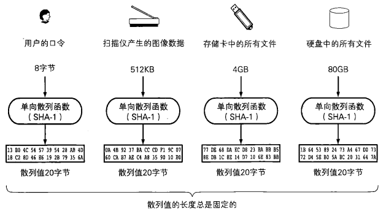
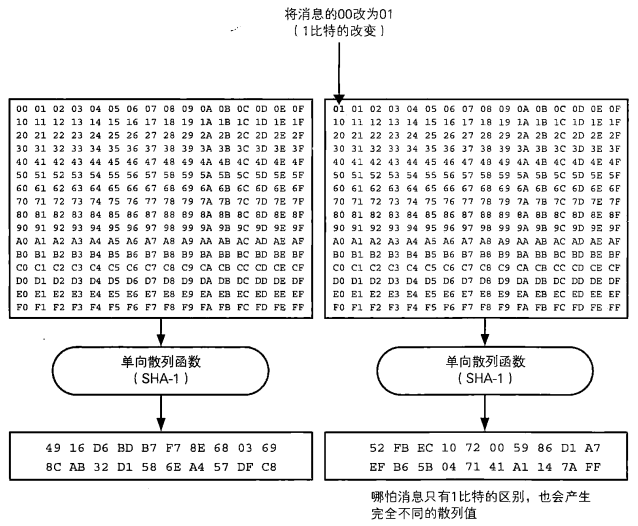
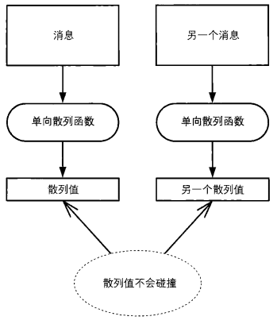
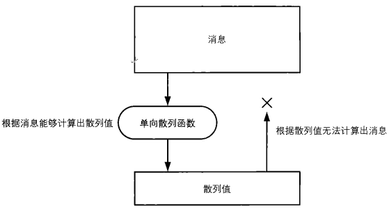
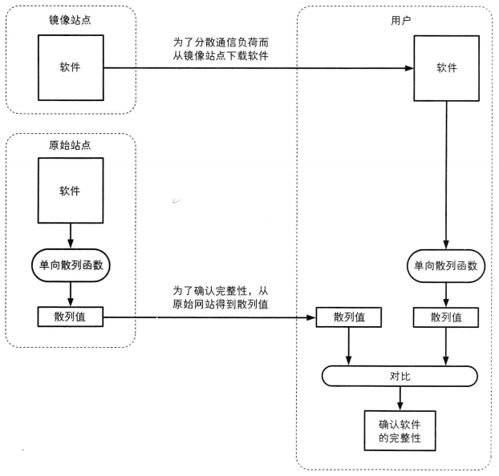

5.单向散列函数(获取消息的指纹)
1 | "单向散列函数 --- 获取消息的指纹" |
在刑事侦查中，侦查员会用到指纹。通过将某个特定人物的指纹与犯罪现场遗留的指纹进行对比，就能够知道该人物与案件是否存在关联。
针对计算机所处理的消息，有时候我们也需要用到“指纹”。当需要比较两条消息是否一致时，我们不必直接对比消息本身的内容，只要对比它们的“指纹”就可以了。
本章中，我们将学习单向散列函数的相关知识。使用单向散列函数就可以获取消息的“指纹”，通过对比 “指纹”，就能够知道两条消息是否一致。
下面，我们会先简单介绍一下单向散列函数，并给大家展示具体的例子。然后我们将详细介绍现在使用非常广泛的SHA-I单向散列函数。
5.1 什么是单向散列函数
单向散列函数（one-wayftnction）有一个输人和一个输出，其中输人称为消息（message），输出称为散列值（hashvalue）。单向散列函数可以根据消息的内容计算出散列值，而散列值就可以被用来检查消息的完整性。

这里的消息不一定是人类能够读懂的文字，也可以是图像文件或者声音文件。单向散列函数不需要知道消息实际代表的含义。无论任何消息，单向散列函数都会将它作为单纯的比特序列来处理，即根据比特序列计算出散列值。
散列值的长度和消息的长度无关。无论消息是1比特，还是100MB，甚至是IOOGB，单向散列函数都会计算出固定长度的散列值。以SHA-I单向散列函数为例，它所计算出的散列值的长度永远是160比特（20字节）。

5.2 关于术语
单向散列函数的相关术语有很多变体，不同参考资料中所使用的术语也不同，下面我们就介绍其中的儿个。
单向散列函数也称为消息摘要函数（message digest function）、哈希函数或者杂凑函数。
输人单向散列函数的消息也称为原像（pre-image）。
单向散列函数输出的散列值也称为消息摘要（message digest）或者指纹（fingerprint）。
完整性也称为一致性。
顺便说一句，单向散列函数中的“散列”的英文”hash一词，原意是古法语中的“斧子”，后来被引申为“剁碎的肉末”，也许是用斧子一通乱剁再搅在一起的那种感觉吧。单向散列函数的作用，实际上就是将很长的消息剁碎，然后再混合成固定长度的散列值。
5.3 单向散列函数的性质
通过使用单向散列函数，即便是确认几百MB大小的文件的完整性，也只要对比很短的散列值就可以了。那么，单向散列函数必须具备怎样的性质呢？我们来整理一下。
根据任意长度的消息计算出固定长度的散列值
首先，单向散列函数的输人必须能够是任意长度的消息。
其次，无论输人多长的消息，单向散列函数必须都能够生成长度很短的散列值，如果消息越长生成的散列值也越长的话就不好用了。从使用方便的角度来看，散列值的长度最好是短且固定的。
能够快速计算出散列值
计算散列值所花费的时间必须要短。尽管消息越长，计算散列值的时间也会越长，但如果不能在现实的时间内完成计算就没有意义了。
消息不同散列值也不同
为了能够确认完整性，消息中哪怕只有1比特的改变，也必须有很高的概率产生不同的散列值。
如果单向散列函数计算出的散列值没有发生变化，那么消息很容易就会被篡改，这个单向散列函数也就无法被用于完整性的检查。两个不同的消息产生同一个散列值的情况称为碰撞（collision）。如果要将单向散列函数用于完整性的检查，则需要确保在事实上不可能被人为地发现碰撞。

难以发现碰撞的性质称为抗碰撞性（collisionresistance）。密码技术中所使用的单向散列函数，都需要具备抗碰撞性。
强抗碰撞性，是指要找到散列值相同的两条不同的消息是非常困难的这一性质。在这里，散列值可以是任意值。密码技术中的单向散列函数必须具备强抗碰撞性。

具备单向性
单向散列函数必须具备单向性（one-way）。单向性指的是无法通过散列值反算出消息的性质。根据消息计算散列值可以很容易，但这条单行路是无法反过来走的。

正如同将玻璃砸得粉碎很容易，但却无法将碎片还原成完整的玻璃一样，根据消息计算出散列值很容易，但根据散列值却无法反算出消息。
在这里需要注意的一点是，尽管单向散列函数所产生的散列值是和原来的消息完全不同的比特序列，但是单向散列函数并不是一种加密，因此无法通过解密将散列值还原为原来的消息。
5.4 单向散列函数的实际应用
下面我们来看一下实际应用单向散列函数的例子。
5.4.1 检测软件是否被篡改
我们可以使用单向散列函数来确认自己下载的软件是否被篡改。
很多软件，尤其是安全相关的软件都会把通过单向散列函数计算出的散列值公布在自己的官方网站上。用户在下载到软件之后，可以自行计算散列值，然后与官方网站上公布的散列值进行对比。通过散列值，用户可以确认自己所下载到的文件与软件作者所提供的文件是否一致。
这样的方法，在可以通过多种途径得到软件的情况下非常有用。为了减轻服务器的压力，很多软件作者都会借助多个网站（镜像站点）来发布软件，在这种情况下，单向散列函数就会在检测软件是否被篡改方面发挥重要作用。

5.4.2 消息认证码
使用单向散列函数可以构造消息认证码。
消息认证码是将“发送者和接收者之间的共享密钥”和“消息，进行混合后计算出的散列值。使用消息认证码可以检测并防止通信过程中的错误、篡改以及伪装。
消息认证码在SSL/TLS中也得到了运用，关于SSL/TLS我们将后边章节中介绍。
5.4.3 数字签名
在进行数字签名时也会使用单向散列函数。
数字签名是现实社会中的签名（sign）和盖章这样的行为在数字世界中的实现。数字签名的处理过程非常耗时，因此一般不会对整个消息内容直接施加数字签名，而是先通过单向散列函数计算出消息的散列值，然后再对这个散列值施加数字签名。
5.4.6 伪随机数生成器
使用单向散列函数可以构造伪随机数生成器。
密码技术中所使用的随机数需要具备“事实上不可能根据过去的随机数列预测未来的随机数列”这样的性质。为了保证不可预测性，可以利用单向散列函数的单向性。
5.4.7 一次性口令
使用单向散列函数可以构造一次性口令（one-time password）。
一次性口令经常被用于服务器对客户端的合法性认证。在这种方式中，通过使用单向散列函数可以保证口令只在通信链路上传送一次（one-time），因此即使窃听者窃取了口令，也无法使用。
5.5 常用的单向散列函数
5.5.1 MD4、MD5
MD4是由Rivest于1990年设计的单向散列函数，能够产生128比特的散列值（RFC1186，修订版RFC1320）。不过，随着Dobbertin提出寻找MD4散列碰撞的方法，因此现在它已经不安全了。
MD5是由Rwest于1991年设计的单项散列函数，能够产生128比特的散列值（RFC1321）。
MD5的强抗碰撞性已经被攻破，也就是说，现在已经能够产生具备相同散列值的两条不同的消息，因此它也已经不安全了。
MD4和MD5中的MD是消息摘要（Message Digest）的缩写。
5.5.3 SHA-1、SHA-224、SHA-256、SHA-384、SHA-512
SHA-1是由NIST（NationalInstituteOfStandardsandTechnology，美国国家标准技术研究所）设计的一种能够产生160比特的散列值的单向散列函数。1993年被作为美国联邦信息处理标准规格（FIPS PUB 180）发布的是SHA,1995年发布的修订版FIPS PUB 180-1称为SHA-1。
SHA-1的消息长度存在上限，但这个值接近于2^64^比特，是个非常巨大的数值，因此在实际应用中没有问题。
SHA-256、SHA-384和SHA-512都是由NIST设计的单向散列函数，它们的散列值长度分别为256比特、384比特和512比特。这些单向散列函数合起来统称SHA-2，它们的消息长度也存在上限（SHA-256的上限接近于 2^64^ 比特，SHA-384 和 SHA-512的上限接近于 2^128^ 比特）。这些单向散列函数是于2002年和 SHA-1 一起作为 FIPS PUB 180-2发布的 SHA-1 的强抗碰撞性已于2005年被攻破, 也就是说，现在已经能够产生具备相同散列值的两条不同的消息。不过，SHA-2还尚未被攻破。
| 比特数 | 字节数 | |
|---|---|---|
| MD4 | 128bit | 16byte |
| MD5 | 128bit | 16byte |
| SHA-1 | 160bit | 20byte |
| SHA-224 | 224bit | 28byte |
| SHA-256 | 256bit | 32byte |
| SHA-384 | 384bit | 48byte |
| SHA-512 | 512bit | 64byte |